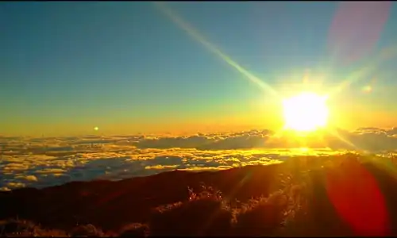
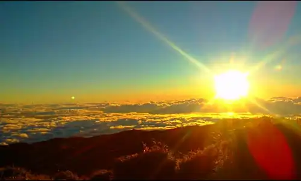

About Us
Want to go hiking but no one to go with or don't know where to go to? Well, look no more! Join us in conquering the
highest peak in Luzon and witness expectacular landscape views, sunrise or sunset,
sea of clouds or the milkyway. Open to all level of hikers, wether you're a begginer
or advanced, we've got a trail that's just right for you.
Routes
Ambangeg Trail
The easy trail starts in Ambangeg, Bokod, Benguet, where hikers are brought
up to the ranger's station in Babalak, Kabayan by a vehicle. From there, the hike takes
about 3 hours to Mt. Pulag. Great for begginers.
Akiki Trail
Dubbed as the Killer trail because of about 10 hour hike on a very steep trail (60-70 degree
slope). The jump-off point is at Duacan, Kabayan, Benguet. For experienced hikers.
Ambangeg Trail
Every fisrt saturday of the month
13:30
Akiki Trail
Every last saturday of the month
05:00


 
